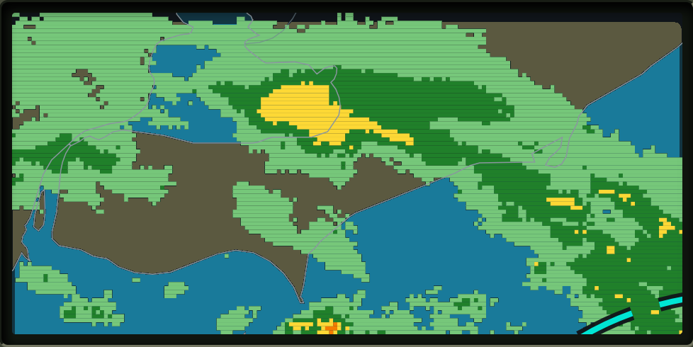
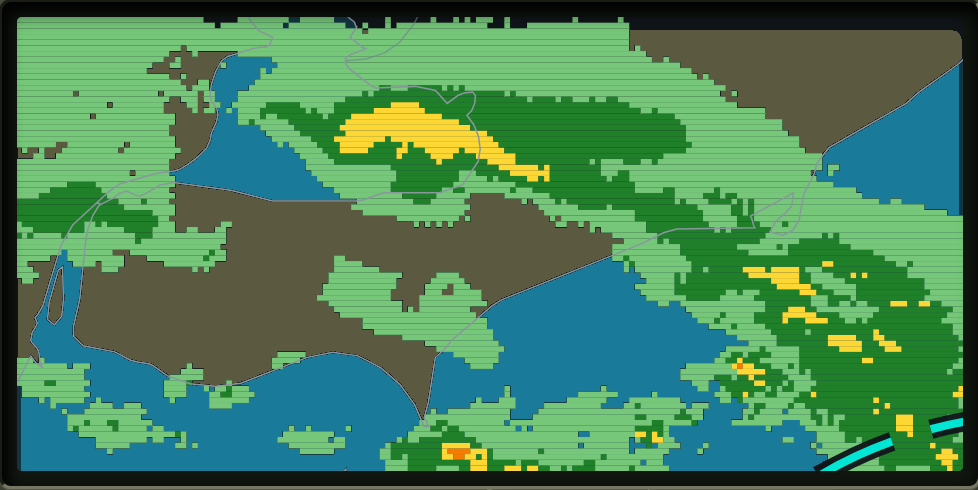
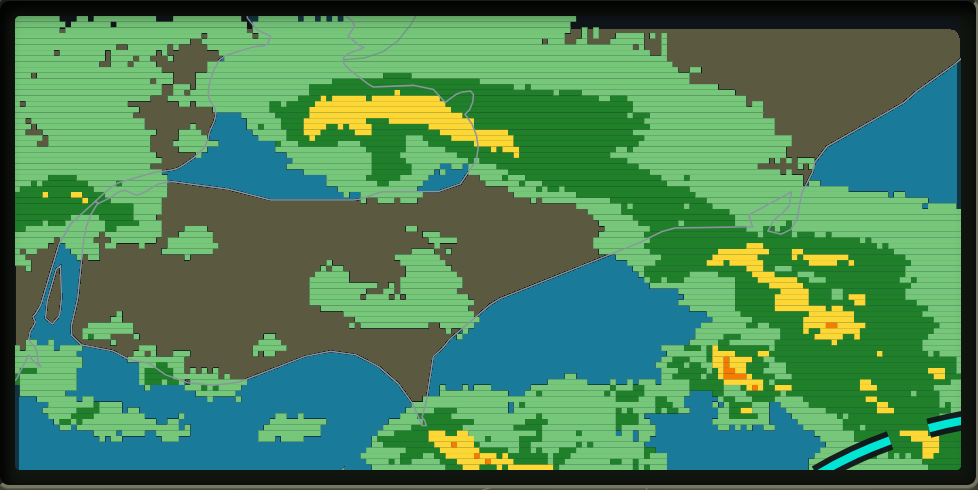

Prototype question: Does a moving precipitation platform turn radar-reading into a golf skill instead of a visual gimmick?
Hole 1 · Par 3
Breakwater Bend
Cleveland · September 23, 2026 · 2:10 PM–2:40 PM
Stroke1
Bonus0
Penalty0
LieTee



CURRENT · 2:10Aim on the course to read next-frame weather
↔
1 · Reveal + choose
Pick a target on the next frame
2 · Club + aim
Tap or click the board to choose the ball's intended landing point. Plan for roll after contact.
3 · Swing
Power, then accuracy
Tap once to lock power at the orange marker. Tap again near the center pin for accuracy.
Throwaway state-model prototype · authored hole and simplified golf physics · no production data is written